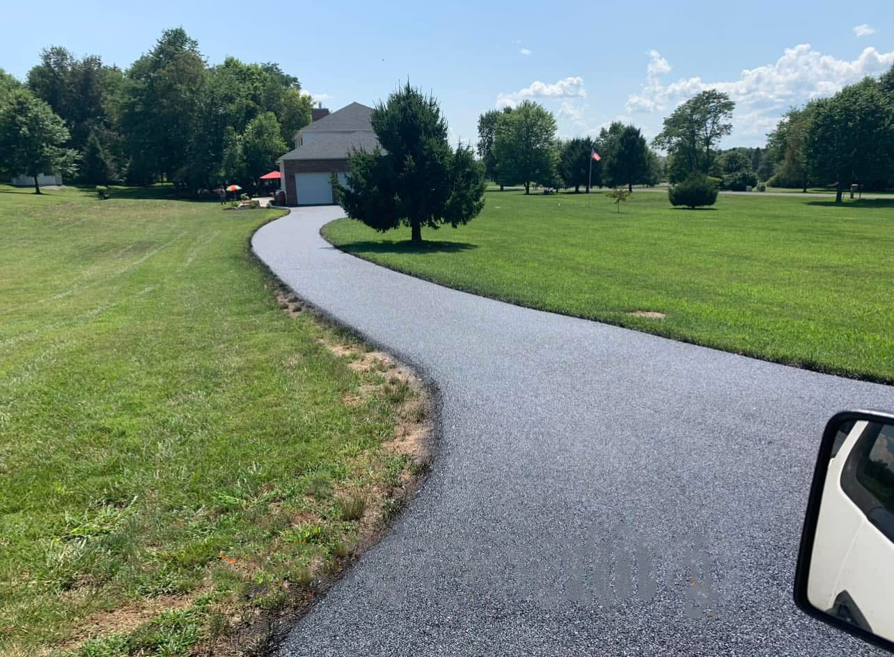

Crack Filling vs. Sealcoating: What Your Driveway Needs

When a driveway starts showing its age, homeowners often ask whether they need crack filling or sealcoating. They sound similar, but they do different jobs. Most well-kept asphalt driveways in the Eastern Panhandle need both at different times, and some need something more. Here is how to tell what yours needs.
What crack filling does
Crack filling targets individual cracks. Each crack is cleaned out so the filler can stick to clean, dry asphalt, and then it is filled with a flexible, rubberized filler. The filler stays slightly soft so it can move as the pavement expands in summer heat and shrinks in winter cold.
The goal is to keep water out of the base. In Berkeley and Jefferson counties, a lot of driveways sit on clay soil that holds water. When water gets through a crack, soaks the stone base, and then freezes, it expands and pushes the crack wider. Over a few winters, an open crack can turn into a sunken spot or a pothole. Filling cracks early is one of the least expensive ways to slow that down.
What sealcoating does
Sealcoating is a thin protective coat spread over the whole driveway. It shields the asphalt from sun, rain, and spilled oil and gas, which all break down the binder that holds the stone together. A fresh coat also brings back the dark, even look of the pavement.
What sealcoating does not do is fill cracks. The coat is thin. It may hide a hairline crack for a while, but it will not seal an open crack against water, and it will not level a low spot or hold together a driveway that is breaking up. Our sealcoating page goes into more detail on what a coat can and cannot fix.
Fill first, then seal
When a driveway needs both, the order matters. Cracks get cleaned and filled first, the filler is given time to set, and then the whole surface is sealcoated. Sealing over open cracks just paints over the problem. Water still finds its way down, and the crack shows back up through the coat.
When crack filling alone makes sense
Crack filling on its own is a good fit when the driveway was sealed in the last couple of years and still looks good, but a few new cracks have opened up. It also makes sense going into the cold season. Crack filler can go down in cooler weather than sealer can, so fall is a good time to fill cracks even when it is getting late in the year for sealcoating.
When sealcoating alone makes sense
A driveway with a faded, gray surface and few or no open cracks may just need a sealcoat. That is common for driveways that are a few years old and have been looked after. If you are deciding when to seal a brand-new driveway, see our guide on when to sealcoat a new asphalt driveway.
When it is more than a maintenance job
Some cracking is beyond what filler and sealer can handle. Watch for cracks that form a web of small blocks, sometimes called alligator cracking, cracks with sunken or broken edges, potholes, and edges that are crumbling away. Those are signs the base under the asphalt has failed. The fix is patching that section or repaving, and our article on signs your driveway needs repaving covers what to look for. When the base is the problem, we explain the options on our driveway paving page.
A simple yearly check
Walk your driveway once in the spring and once in the fall. Look for new cracks, low spots where water sits, and edges that are breaking off. Catching cracks while they are small keeps the job small. We do crack repair and sealcoating across the area, from Charles Town to Martinsburg.
If you are not sure what your driveway needs, call us at (304) 579-3872. We will look at the cracks, check the surface, and tell you straight whether it needs filling, sealing, both, or a bigger repair. Call for a free estimate.